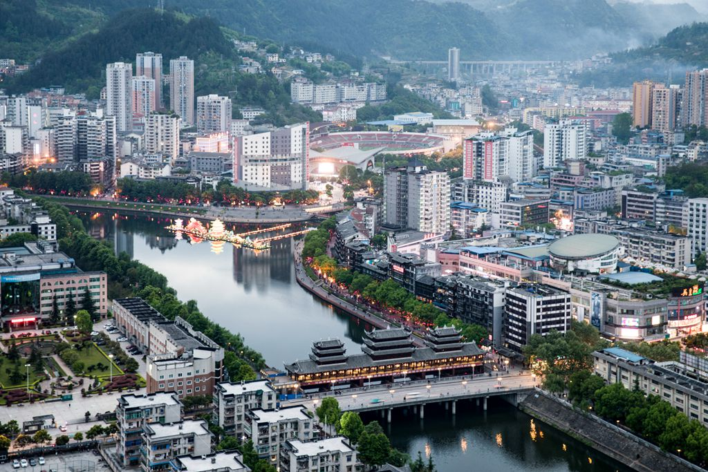

中国峡谷城·武陵会客厅
——清新黔江欢迎您！
黔江地处武陵山区腹地和重庆市东南部中心，是国市定位的武陵山片区中心城市之一和渝东南区域中心城市。面积2402平方公里，辖30个乡镇街道，户籍人口55.6万，城市建成区面积27.6平方公里、人口28万，城镇化率60.3％。
丹兴古韵，红色故地。东汉建安六年（公元201年）始置丹兴县，因境内盛产丹砂而得名，迄今1800多年。是少数民族聚居区，以土家族、苗族为主的少数民族人口占75.3％，民族风情独特浓郁，荣获全国民族团结进步示范区。是全国一类革命老区，红三军入渝的首站，原红三军政委万涛的故乡，留下了刘伯承、邓小平、贺龙等老一辈无产阶级革命家的战斗足迹，获评全国双拥模范城。“宁愿苦干、不愿苦熬”的时代精神享誉全国，“天理良心”诚信文化名传于世。
